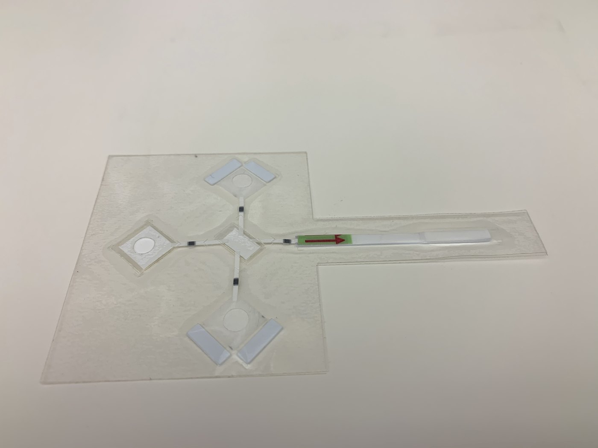

The experience
Taylor Moehling’s Whitaker experience in Haiti helped ground a biomedical engineering project in its intended setting. She was developing a low-cost paper-based test to detect Vibrio cholerae in environmental water.
The perspective
Conversations with field workers, laboratory technicians, doctors, and community health workers informed the project’s direction and questions about usability. Writing in 2020, she had also completed a public-health master’s degree, bringing that perspective together with her engineering training.
